M.Indestructible
Interprété par :
Craig T. Nelson
Créateur :
Brad Bird
Compagnon :
Elastigirl
Interprété par :
Craig T. Nelson
Créateur :
Brad Bird
Compagnon :
Elastigirl

Visible dans : Les Indestructibles, Les Indestructibles 2.
Nom original : Mr Incredible / Robert Parr.
Voix française : Marc Alfos.
Voix originale : Craig T. Nelson.
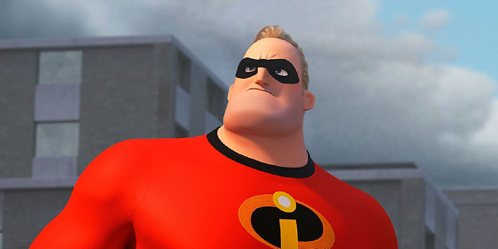
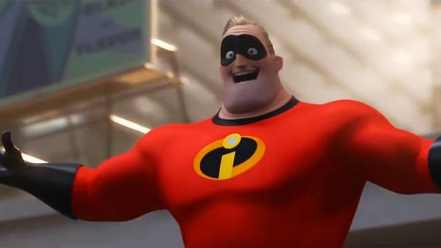
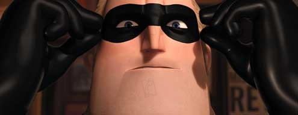
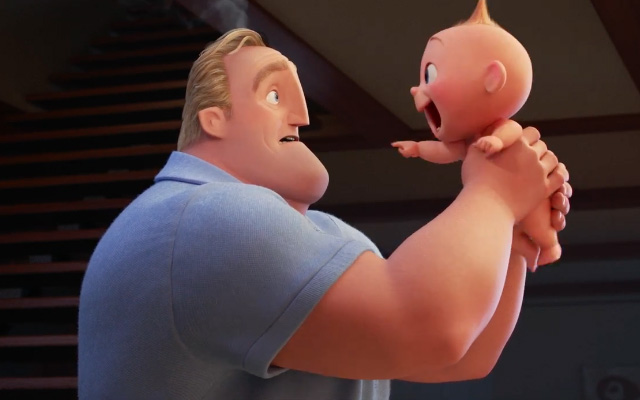
Pendant qu’il se rend à un rendez-vous, Monsieur Indestructible aide une vielle dame a récupéré son chat et arrête des brigands poursuivis par la police. Il retrouve Buddy dans sa voiture, qui est son plus grand fan, et qui veut devenir un super-héros lui aussi. Il continue sa poursuite de la justice en interpellant un voleur sur un toit d’immeuble, et il se trouve face à Elastigirl avec qui il est très proche. Par la suite il sauve un homme qui voulait se suicider en sautant du haut d’un immeuble. Il est alors témoin du cambriolage que fait Folamour et va pour l’intercepter quand Buddy intervient avec ses inventions de super-héros. Folamour lui colle un explosif dessus, ce qui oblige Monsieur Indestructible à le laisser fuir pour sauver Buddy. Dans le sauvetage, il détruit une portion d’une voie ferrée. Robert Parr part à son rendez-vous où il épouse Helen. Suite au procès d’Oliver Degris, il prend sa retraite.
Quinze ans ont passé et il travaille dans la compagnie d’assurance Insuricare. Son travail ne le passionne pas. Malgré les remarques de son patron, il aide au mieux ses clients en leur indiquant la marche à suivre.
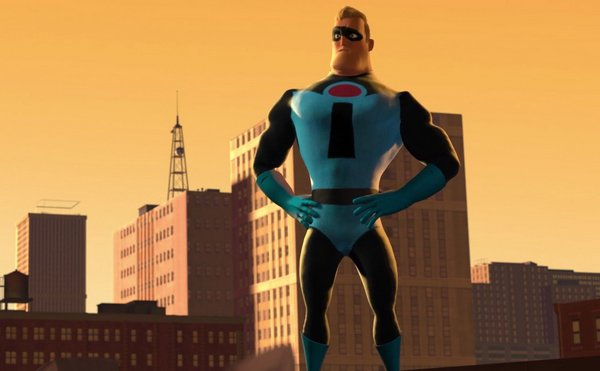 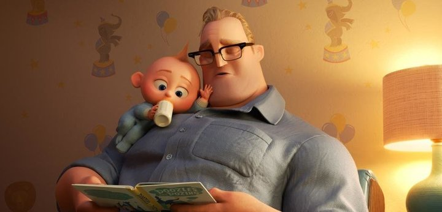Quinze ans ont passé et il travaille dans la compagnie d’assurance Insuricare. Son travail ne le passionne pas. Malgré les remarques de son patron, il aide au mieux ses clients en leur indiquant la marche à suivre.
Tous les jeudi soir Robert va avec son meilleur ami Lucius jouer au bowling. En réalité ils partent en ville se raconter des histoires de leur ancienne vie. En écoutant la fréquence de la police, ils partent aider des gens piégés dans un immeuble en flammes. En défonçant les murs il va faire effondrer l’immeuble et ils vont se retrouver dans une bijouterie où l’alarme sera déclenchée. Ils s’en sortent grâce à Lucius. A son retour chez lui, Helen l’attend et une scène de ménage s’en suit, sur le fait de préserver leur identité secrète.
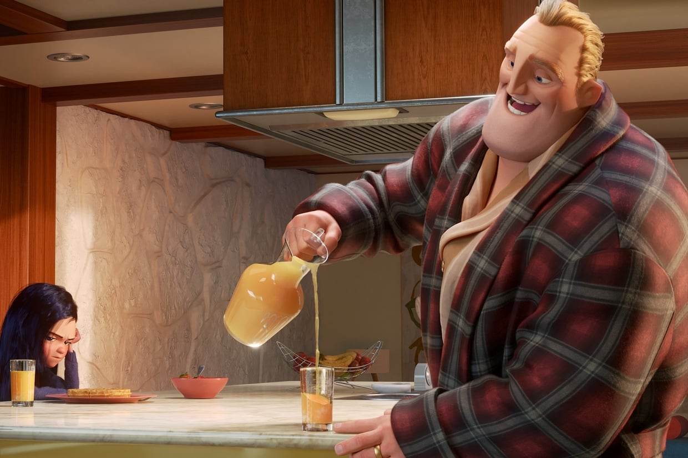 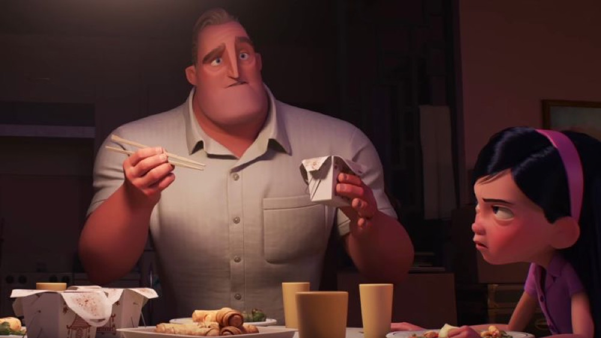Robert est convoqué par son directeur et lui fait comprendre qu’il travaille trop bien, ce qui nuit aux actionnaires. En ne pouvant pas aller aider une personne en difficulté dans la rue, il s’énerve et envoie son directeur à travers la pièce. Par cette action il sera renvoyé. Rick Dicker arrange la situation mais Robert n’avouera pas à sa femme son licenciement. En rentrant chez lui et en allant dans son bureau, il découvre un message à son attention pour un travail impliquant ses talents de super-héros.
Sur l’île, il détruit sans trop de soucis Omnidroïd. Grâce à sa réussite, il se fait inviter à dîner par Mirage. Ce nouvel emploi redonne le bonheur à Robert qui profite plus de sa famille et à l’aide de son nouveau salaire, il s’achète une nouvelle voiture. Pour sa femme, il a dit qu’il a eu une promotion au travail. Il se rend chez Edna Mode pour recoudre son costume mais celle-ci lui en propose d’en faire un nouveau.
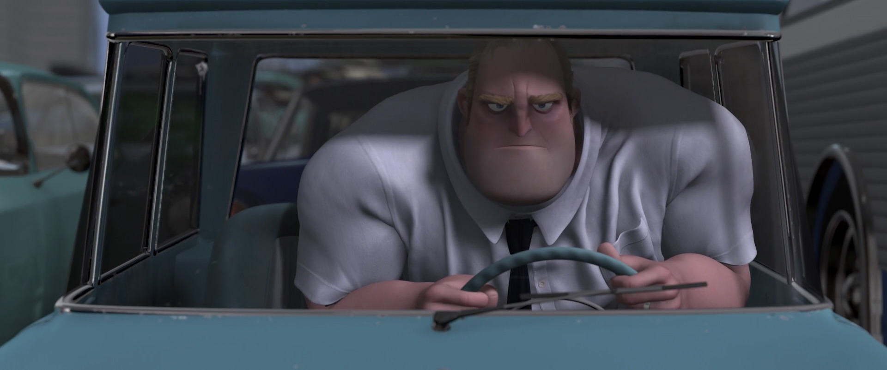Son travail le fait combattre une nouvelle version d’Omnidroïd où il va échouer. Il découvre alors l’inventeur de ce robot : Syndrome. Il comprend vite qu’il s’agit de Buddy. Monsieur Indestructible le fuit et saute du haut du chute d’eau. Pour éviter un explosif lancé par Syndrome, il se réfugie dans une caverne où il découvre le squelette d’un ancien super-héros qui lui indique une inscription sur le mur : “KRONOS”. Il retourne dans la base de Syndrome et découvre la réalité du projet Kronos. Il se fait malheureusement attrapé. Syndrome est satisfait de cette prise et lui fait assister en direct aux missiles qui prennent en chasse l’avion de sa femme avec ses deux enfants à l’intérieur. Il vit leurs morts et se retrouve attristé. De colère il prend Mirage en otage et menace de la tuer. Il n’y arrivera pas et constatera qu’il est devenu “faible”. Libéré par Mirage, il commence à l’étrangler quand elle lui apprend que sa famille est toujours en vie. Il retrouve sa femme et ensemble partent sauver leurs enfants dans la jungle.
Monsieur Indestructible défend courageusement sa famille et se fait capturer par Syndrome. Il profite de son emprisonnement pour avouer à sa femme qu’il n’est plus le grand héros d’antan. Grâce à sa fille, ils se font tous libérer et partent en ville pour combattre Omnidroïd. Monsieur Indestructible, grâce à sa famille, réussit à détruire le robot en lançant un de ses bras articulé contre lui-même.
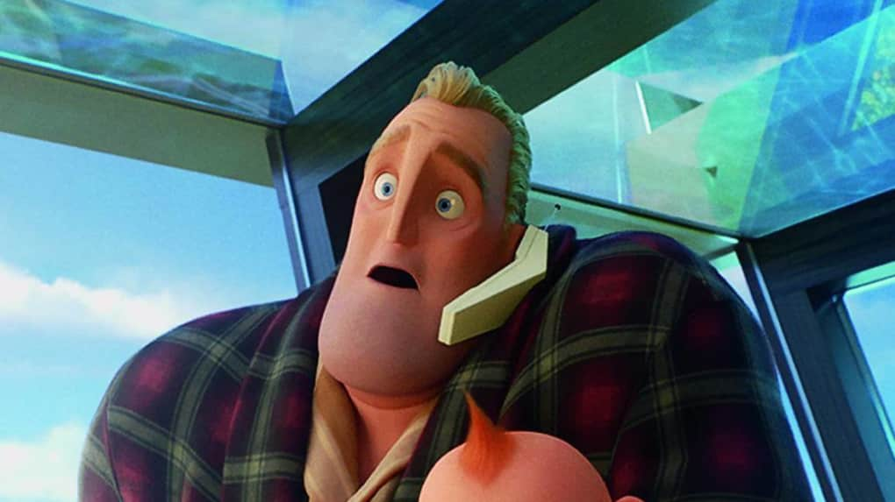 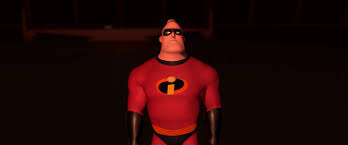En rentrant chez lui, il découvre Syndrome qui s’empare de son bébé. Ne pouvant rien faire, Monsieur Indestructible constate que Jack-Jack est doté de grands pouvoirs qui lui permet de se libérer tout seul. Il profite de cette occasion pour lancer un projectile sur l’avion de Syndrome qui entraînera la mort de ce dernier.
Robert Parr assiste à la course de vitesse de son fils et l’encourage à finir deuxième, le félicitant de sa prestation. En sortant du stade, il se prépare à affronter le Démolisseur.